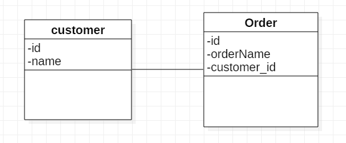
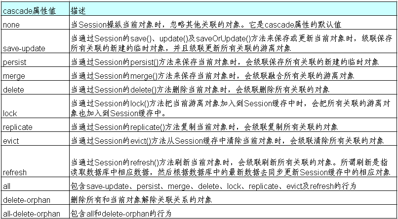

今天自学Hibernate的多对一关联，整体来说，多对一关联分为单向多对一和双向多对一，这两种从数据库视图中完全没有区别，区别在于编码的数据访问层视图，单向多对一在多的那边的每一个实体持有”一“端这边的引用，获取可以直接获取，通过代理模式实现懒加载来提供一个看似“直接操作”的效果，而所谓双向，就是“一“这一端持有一个集合类型的引用，来描述多的一方，当然这个集合类型也是懒加载的，因此需要注意Set类型的引用必须是接口。当然这在数据访问层的不同是通过Hibernate的配置文件设置的。下面将会对一个具体的例子来总结。
这里介绍的还是一个订单”orders(注意order是数据库关键字)“和”顾客customer“间的例子

单向一对一
单向一对一中，主要是”多“这一端持有”一“这一端的引用，那么在其实体类就变成了：
1 | //orders,忽略Getter&Setter |
那么在其hbm.xml自然会去指明：
1 | <hibernate-mapping package="entity"> |
可以看到，这里使用many-to-map,自己这一端是many，对的是one，这个标签整体的语义是
- 首先是一个多对一映射
- 自己这一端的类字段名是consumer
- 这个类字段名对应的类是Consumer
- 通过consumer_id字段值去找对应的实体
双向一对一
双向一对多，这里的类添加了一个set类型的引用，需要注意的是这个set引用提前被初始化，以防止空指针异常这个错误:
1 | public class Consumer { |
同样hbm.xml文件需要一些操作
1 | <hibernate-mapping package="entity"> |
这里需要注意的是set标签其内容。注意其中包含的是one-to-many的标签，这样就可以获得对应多端的集合了，但是在此，务必要明白以下几个关键点：
是否只要将Order的Set集合赋值给一个新的Consumer实例，之后调用Session保存就可以都添加进去(不行，除非添加级联)
为什么先保存Order再保存Consumer发送的SQL个数的条数不一样？（调用了update方法，刚开始插入那几条外键为空）
为什么如下代码发送SQL如此啰嗦，如下：
1
2
3
4
5
6
7
8
9
10
11
12
13
14
15
16
17
18
19
20
21
22
23
public void testMany2OneSave(){
Session session =sessionFactory.openSession();
session.beginTransaction();
Consumer consumer = new Consumer();
consumer.setName("Maoxin");
//这里多的一方建立与1的一方的关系
Order order1 = new Order();
order1.setProductName("YunDongDian");
order1.setConsumer(consumer);
Order order2 = new Order();
order2.setProductName("PS4");
order2.setConsumer(consumer);
//这里是consumer主动管理n的乙方
consumer.getOrders().add(order1);
consumer.getOrders().add(order2);
session.save(consumer);
session.save(order1);
session.save(order2);
session.getTransaction().commit();
session.close();
}发送的SQL为:
1
2
3
4
5
6
7
8
9
10
11
12
13
14
15
16
17
18
19
20
21
22
23
24
25
26
27
28
29
30
31
32
33
34
35
36Hibernate:
insert
into
consumer
(name)
values
(?)
Hibernate:
insert
into
orders
(product_name, consumer_id)
values
(?, ?)
Hibernate:
insert
into
orders
(product_name, consumer_id)
values
(?, ?)
# 下面的update是什么意思？
Hibernate:
update
orders
set
consumer_id=?
where
id=?
Hibernate:
update
orders
set
consumer_id=?
where
id=?由于默认情况下是双方维护关联关系，也就是说1这一方也得去维护，这就导致了以上结果，详情在下面，最终应该使用
1
2
3
4<set name="orders" table="orders" inverse="true">
<key column="consumer_id"/>
<one-to-many class="Order"/>
</set>
注意事项
inverse属性
其是SET的属性
在hibernate中通过对 inverse 属性的来决定是由双向关联的哪一方来维护表和表之间的关系. inverse = false 的为主动方，inverse = true 的为被动方, 由主动方负责维护关联关系在没有设置 inverse=true 的情况下，父子两边都维护父子关系
- 在 1-n 关系中，将 n 方设为主控方将有助于性能改善(如果要国家元首记住全国人民的名字，不是太可能，但要让全国人民知道国家元首，就容易的多)
- 在 1-N 关系中，若将 1 方设为主控方会额外多出 update 语句。插入数据时无法同时插入外键列，因而无法为外键列添加非空约束
关于级联
在对象 – 关系映射文件中, 用于映射持久化类之间关联关系的元素,
<set>,<many-to-one>和<one-to-one>都有一个 cascade 属性, 它用于指定如何操纵与当前对象关联的其他对象.级联的详情
